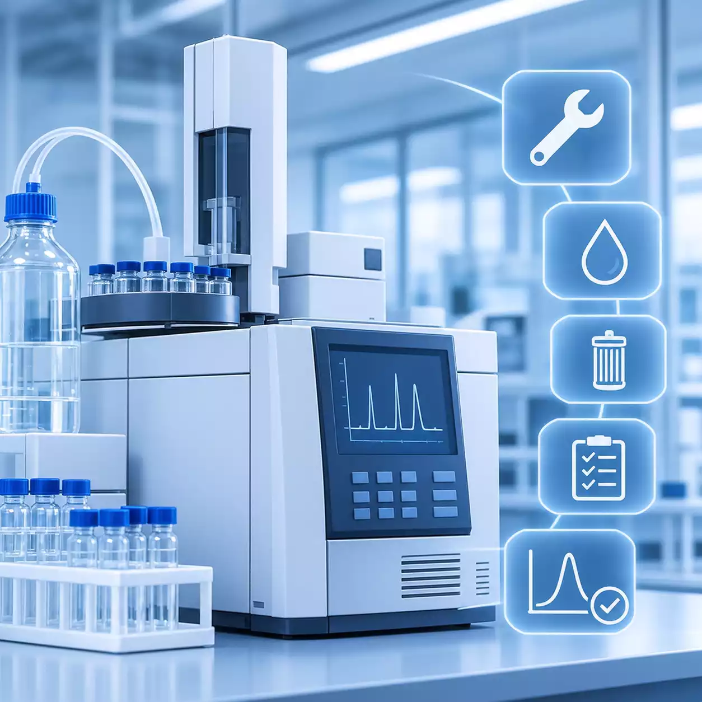

Обслуживание хроматографов и предповерочная подготовка
Выполняем техническое обслуживание и предповерочную подготовку жидкостных (ВЭЖХ) и газовых (ГХ) хроматографов, чтобы прибор проходил поверку без повторных визитов и лишнего простоя.

Что входит в обслуживание
Насос и автосамплер
Диагностика насосной системы, замена уплотнений поршней, фильтров, капилляров и игл автосамплера.
Газовые линии и испаритель
Проверка газовых линий, замена септ, лайнеров, фильтров и ловушек.
Детекторы
Диагностика детекторов, замена дейтериевых и вольфрамовых ламп, проверка энергии лампы.
Промывка тракта
Промывка и кондиционирование жидкостного тракта, замена и подбор хроматографических колонок.
Шум и дрейф
Проверка герметичности газовых и жидкостных линий, тестирование шума и дрейфа базовой линии.
Контрольные прогоны
Прогоны тестовых смесей: воспроизводимость, линейность и предел обнаружения до визита поверителя.
Когда необходимо обслуживание
Регулярное обслуживание сохраняет метрологические характеристики прибора между поверками.
Перед поверкой
Замена расходных частей и контрольные прогоны до визита поверителя, чтобы избежать повторной поверки.
При ухудшении хроматограмм
При росте шума и дрейфа базовой линии, нестабильном давлении, уширении пиков и плохой воспроизводимости.
Плановое техническое обслуживание
По графику технического обслуживания и по ресурсу расходных материалов.
После простоя или перемещения
Перед вводом прибора в работу после длительного простоя, переезда лаборатории или ремонта.
Перед каждой поверкой
Предповерочную подготовку проводим до визита поверителя — с запасом времени на замену узлов
Межповерочный интервал хроматографа устанавливается при утверждении типа средства измерений и указывается в Государственном реестре средств измерений Республики Беларусь.
Где работаем
Обслуживаем хроматографы Agilent, Shimadzu, Waters, Thermo Fisher, «Кристалл» и других производителей.

Фармацевтические производства
Промышленные лаборатории

Пищевые производства
Научные и учебные лаборатории

Испытательные лаборатории
Нужно обслуживание хроматографа?
Сообщите модель хроматографа, тип детектора и дату ближайшей поверки. Подготовим предложение и согласуем дату выезда.